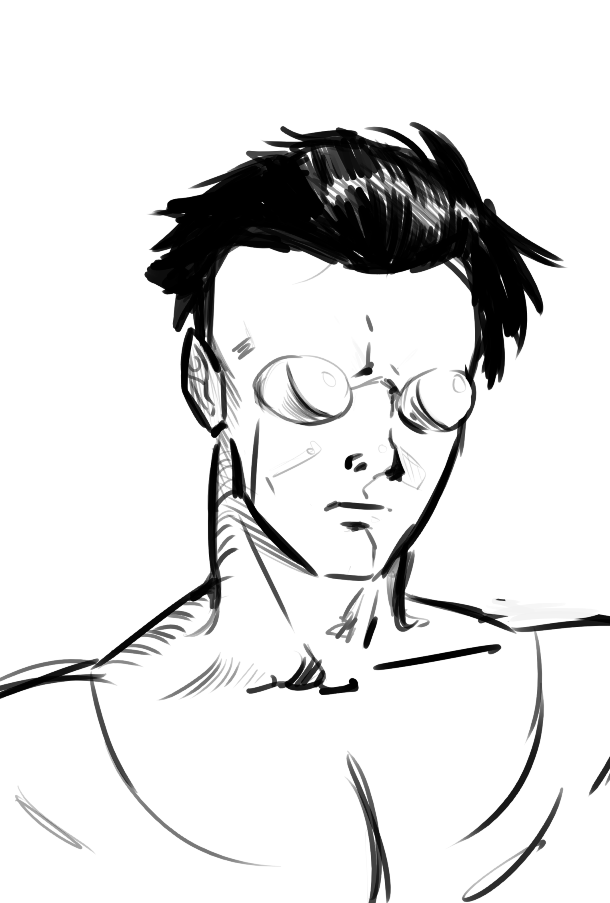
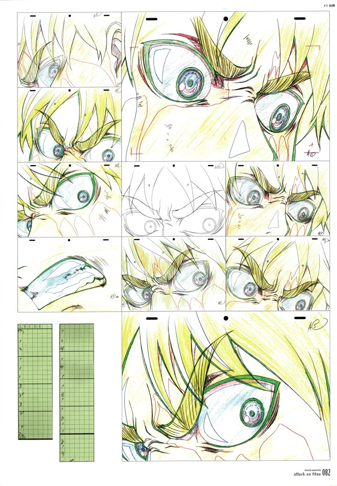
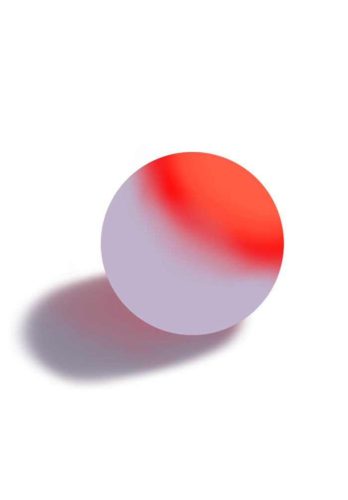
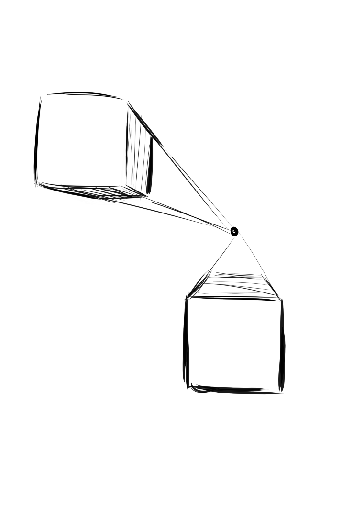

Além de ser o principal meio de entreterimento dos humanos, a partir da música, histórias como em livros, HQs, Filmes, Teatro, Culinária, e muito mais que acaba trazendo um signifaco a mais em viver, e conseguir ser capaz de nos fazer seguir em frente e perceber como se há um significado em continuar sobrevivendo.
Como também servir como uma linha do tempo para a evolução tecnológica e de técnicas da sociedade, por exemplo, como avanços da medicina a partir de melhora nas estruturas anatômicas dos indivíduos, e de noção de espaço como a perspectiva, porém mais a frente iremos nos aprofundar nesses quesitos.

ilustrações
Animações


-Linhas,
-Formas,
-Perspectiva,
-Anatomia,
-Luz e sombra,
-Cor e
-Composição.


Também vamos analisar os 12 princípios da animação, que são:
- Esticar e Comprimir (Squash and Stretch)
- Antecipação (Anticipation)
- Encenação (Staging)
- Ação Direta e Pose a Pose (Straight Ahead Action and Pose to Pose)
- Continuidade e Sobreposição de Ações (Follow Through and Overlapping Action)
- Aceleração e Desaceleração (Slow In and Slow Out)
- Arcos (Arcs)
- Ação Secundária (Secondary Action)
- Temporização (Timing and Spacing)
- Exagero (Exaggeration)
- Desenho Sólido (Solid Drawing)
- Apelo (Appeal)